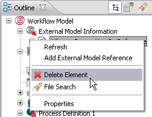
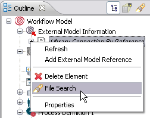

Figure: Get Registry Connection Details
The Model Element Repository integration provides you with the possibility to refer to any external source for applications, services, data and business objects and process definitions.
This chapter guides you through the following two registry type examples:
Stardust provides registry type extension points, e.g. for the Stardust Registry. Registry connections for a registry integration can be created for Stardust Process Models. You can connect to an arbitrary number of Stardust registries.
You have the option to implement your own repository connection extension points. Please refer to the chapter Implementing a Repository Connection Extension Point for detailed information.
Depending on the registry technology supported by your company, registry connections can be created for Stardust Process Models edited in your Eclipse environment. A registry connection presents the services contained in a service registry as already defined and allows the modeler to use these services seamlessly and immediately in the process model with a drag and drop mechanism.
Before you start, make sure you enabled your proxy settings:
Figure: Enable your Proxy Settings
To create a registry connection:
Figure: Create a Registry Connection
Now the registry properties dialog pops up, where you can enter the registry login credentials. Select Stardust Connection Properties in the left pane and fill in the following properties:
Figure: Create a Registry Connection
Now the defined registry connection is created and a corresponding tree entry is displayed under the registry connection node.
A successful connecting to a registry will return the list of solutions and their solution type. You find the solutions listed under the registry connection in the Outline view.
To get details for the solution right-click the solution and select Get Details:
Figure: Get Registry Connection Details
Having retrieved the details of the selected solution, the solution can be expanded in the tree to display the list of elements.
Figure: Registry Connection Outline
To open the Stardust Node Properties dialog:
Figure: Stardust Node Properties
In the left pane of the properties dialog select Types Mapping. A table is displayed on the right side with Type Name and corresponding Stardust Name:
Figure: Types Mapping
Stardust provides the following Names:
Select Scan to scan for all type names provided by the model information.
You can specify several Type Names, by entering a new Type Name and choosing one of the provided Stardust Names.
Figure: Add a Custom Type Name.
You can filter the registry by its solutions with appropriate settings in the Registry Filter dialog:
Figure: Open Registry Filter
In the Filter dialog choose a Filtertype for Solution Name and Solution Type:
Type in the values the solutions should be filtered by.
Figure: Choose Registry Filtering
All elements like services, applications, data and processes used from the registry are only referenced from the process model. An online registry connection is required to access these objects. Referenced elements can be explicitly imported into the model. With this step, its reference to the registry is lost and the model elements are considered to be local.
To import a referenced element:
Figure: Import Registry Element
During model deployment, the current state of all referenced registry elements is added to the deployed model.
Similarly, you can double-click on the connection and select the elements that you want to import.
When you import the elements by reference, the following model elements are available:
Note that these elements are only referred in the referencing model and by any way they do not get copied to the model. For more information, please refer to the section Usage of Elements Imported by Reference.
To provide stability of model references against changing file locations, absolute as well as relative path is supported. The following syntax is used for relative path:
To create a file connection:
Note if the Import by Reference checkbox is selected then the usage of elements from the imported models is done by reference in the referencing model. If not selected, elements are copied by value. For more information, please refer to the section, Copying By Reference or By Value of the chapter Copying and Pasting Modeled Elements.
Figure: Create a File Connection
To refresh the file connection:
Figure: Refresh File Connection
If elements are changed in the provider model, the refresh operation reflects the change in consumer model.
You can also add a new external model reference using the Add External Model Reference option. This is just another way to add references under the External Model References node. For more information, please refer to the section Managing References to Other Models. Note that if the external model reference already exists then Add External Model References context menu is not available.
Figure: File Connection - Add External Model References
To delete the file connection:

Figure: Delete Element
The confirmation dialog box is displayed. If you click OK the file connection to provider model gets deleted.
Figure: Delete Element - Confirmation Dialog
To use the search functionality on a file connection:

Figure: Search on a File Connection
This will invoke the Search dialog. Enter a search string and select Search. Note that no wildcards are supported here.
Figure: Enter a Search Text.
All elements containing the search text in their name are displayed in the Search Result tree.
Figure: The Search Result List.
The Properties menu displays the same dialog box in which you can edit and view the file connection properties.
In case a connection pointing to a referenced model has been removed or renamed, a validation error occurs, indicating that the connection to the referenced model could not be established.
Whenever a new file connection is created, a validation check is performed to detect whether the new model references would create circular reference between the set of models in the same workspace. A Circular Dependency Detected warning is displayed.
Dangling references may result, in case, file to be referenced is not found. Inconsistency error is displayed at the time of the deployment.
Only after establishing the file connection with referenced model and selecting Imported by Reference check box the elements can be referenced. These elements cannot be used as local elements. Although they behave as local elements. So if any changes are performed in the referenced model, the file connection should be refreshed.
To use the element imported by reference in the referencing model, you need to perform the drag-and-drop operation.
Figure: Drag Referenced Element
Each element of referenced model has following semantics in the referencing model:
For more information, please refer to the Outline View chapter.
Note that in case a referenced model element is not accessible due to rename or deletion, a validation error, indicating that the model element is not present in the referenced model is displayed in the Problems view.
Also note that reference cannot be established to a model element of a referenced model if any reference to a model element of another version of the referenced model has already been created. In this case, you cannot drag and drop model element of a referenced model and the warning is displayed in the Problems view.
Dangling references may result in case referenced model elements are not displayed. Inconsistency error is displayed at the time of the deployment.
You can view the references to other models using External Model References node. An External Model References is a library which keeps track of the referenced models. For each provider model used from the current model, it contains a sub-node with the name of the referenced model. Note that a file connection must exist prior to manage references action.
Figure: External Model References
If the reference is not added from File Connection menu context then you can add a new external model reference using this option. Right-click on External Model References node and select Add External Model Reference from the context menu. However note that references also get added when you drag and drop any referenced element into the consumer model. In that case, you do not need to explicitly add the reference using this option.

Figure: Add External Model References
List of available file connections are displayed. Select file connection as the source to add new external model reference.

Figure: File Connection
If the reference already exists in the model then the "Reference Exists" message is displayed and Add External Model Reference operation is canceled. Else the reference of the provider model gets added under the External Model Reference node.
Figure: Reference Exists
You can perform following operations on each external reference node:
Deletes all usages of the provider model from the consumer model.
Figure: Delete External Model Reference
If you select the Delete option, the following warning is displayed.
Figure: Delete External Model Reference - Warning
Select this option to rename the external model reference.
Figure: Rename External Model Reference
Displays a list of all usages of model elements from the provider model in the Search Results view.
Figure: References
To view the properties, select Properties from the context menu.
Figure: Properties
Following properties of the selected external model reference get displayed.
Figure: Properties of External Model Reference
Note that in case a referenced model is not accessible due to deletion from file system or moved to another location or renamed, a validation error, indicating that the model is not present is displayed in the Problems view.
Dangling references may result, in case referenced models are not found. An error of inconsistent model version is displayed at the time of the deployment.